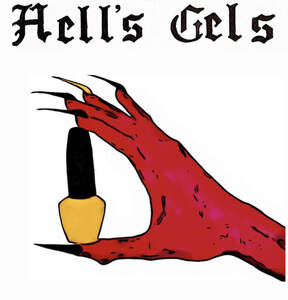

Trade Mark Journal No.2025/052 26 December 2025
UK00004309664 12 December 2025 (3,44)

- Class 3
- Nail cosmetics; Nail paint [cosmetics]; Nail hardeners [cosmetics]; Nail primer [cosmetics]; Nail polish removers [cosmetics]; Nail tips [cosmetics]; Nail varnish remover [cosmetics]; Nail makeup; Nail base coat [cosmetics]; Cosmetics; Cosmetic nail preparations; Nail varnishes; Nail whiteners; Nail polish; Nail polish removers; Cosmetic nail care preparations; Nail varnish for cosmetic purposes; Skincare cosmetics; Nail polish pens; Nail polish remover pens; Nail polish remover; Cosmetic preparations for nail drying; Nail gel; Gel nail removers; Nail varnish; Varnish (Nail -); Nail glitter; Nail enamel removers; Nail enamels; Nail varnish removers; Nail enamel remover; Nail cream; Moisturisers [cosmetics]; Nail enamel; Nail conditioners; Skin moisturizers used as cosmetics; Nail strengtheners; Colour cosmetics; Skin care cosmetics; Beauty care cosmetics; Nail hardeners; Cosmetics for use on the skin; Decorative cosmetics; Cosmetics and cosmetic preparations; Skin, eye and nail care preparations; Make-up palettes containing cosmetics; Nail tips; Non-medicated cosmetics; Cosmetics in the form of lotions; Nail polishing powder; Nail polish base coat; Nail buffing preparations; Nail care preparations; Skin care lotions [cosmetic]; Nail polish top coat; Mousses [cosmetics]; Nail art stickers; Body and facial creams [cosmetics]; Body care cosmetics; Glitter in spray form for use as a cosmetics; Nail varnish removing preparations; Lotions for strengthening the nails; Skin recovery creams [cosmetics]; Moisturising skin lotions [cosmetic]; Skin balms [cosmetic]; Skin care creams [cosmetic]; Cosmetic creams for skin care; Night creams [cosmetics]; Body and facial gels [cosmetics]; Cosmetics in the form of creams; Skin cleansers [cosmetic]; Fluid creams [cosmetics]; Skin creams [cosmetic]; Skin creams [for cosmetic use]; Cosmetic creams for the skin; Cosmetic creams and lotions; Cosmetic skin fresheners; Nail repair preparations; Beauty lotions; Nail decolorants; Dressings for nail reconstruction; Adhesives for false eyelashes, hair and nails; Cuticle removers; Powder for forming sculpted finger nail tips.
- Class 44
- Nail salon services; Salons (Hairdressing -); Hairdressing salons; Tanning salons; Beauty salons; Salons (Beauty -); Beauty salons for wig cutting; Skin care salons; Services of a hair and beauty salon; Hair salon services; Airbrush tanning salon services; Salon services (Hairdressing -); Hairdressing salon services; Spray tanning salon services; Hair salon services for women; Nail care services; Hair salon services for men; Hair dressing salon services; Beauty salon services; Salon services (Beauty -); Tanning salon and solarium services; Slimming salon services; Manicure and pedicure services; Sun tanning salon services; Tanning (Sun -) salon services; Skin care salon services; Rental of machines and apparatus for use in beauty salons or barbers' shops; Cosmetic laser treatment of toenail fungus; Hairdressing; Manicure services.
Fiona Marian